Candidate List 20260902Last night — ZTF: 1,890 passed basic cuts (38 young) · LSST: 0 passed basic cuts (0 young)Previous Day Next Day
Section 1: New Sources (age<1d) Section 2: Old (1-5d) sources observed last nightplaceholder
Section 1: New Afterglow/FBOT Cands Last Night (1)
1. [ZTF] ZTF26abrsaid (Afterglow?) [Back to Top] [Share] [Trigger Swift] [Fritz Alert] [Fritz Source] [Lasair]RA, Dec: 290.99049, 0.68629 19h23m57.72s, 0d41m10.63sGalactic (l, b): 37.27332, -6.91558 ext(g-r) = 0.505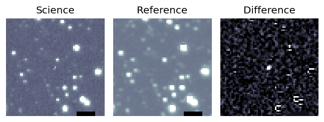
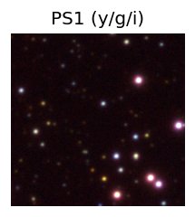

TESS: Sectors [54 81]
PS1: 0 sources in 3 arcsec
LegacySurvey: 0 sources in 3 arcsec
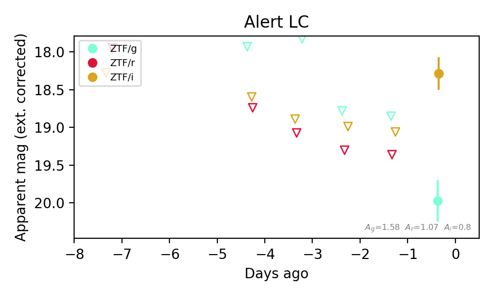
Extinction-corrected gi color:
From alerts: 1.69 +/- 0.35 mag
Consistent with synchrotron, g-r>0!
Rise Rate:
i: 0.85 mag/day
Fade Rate:
Section 2: Older Sources Observed Last Night (4)
0. [ZTF] ZTF26abramlb (FBOT?) [NED transient: PSO J011.2292+41.5531 (V*, 8.5″) — reported, not trusted] [Back to Top] [Share] [Trigger Swift] [Fritz Alert] [Fritz Source] [Lasair]RA, Dec: 11.22607, 41.55293 0h44m54.26s, 41d33m10.53sGalactic (l, b): 121.62, -21.30218 ext(g-r) = 0.488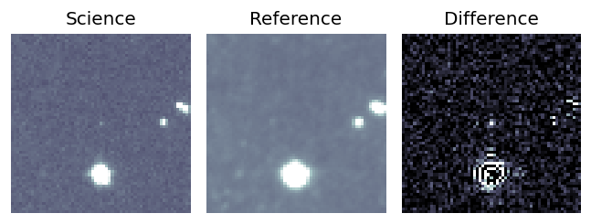
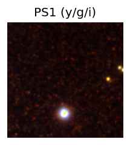

TESS: Sectors [17 57 84]
PS1: 1 source in 3 arcsec Closest: d = 1.09 arcsec photoz=0.16+/-0.03 peak abs mag = -25.98
LegacySurvey: 0 sources in 3 arcsec
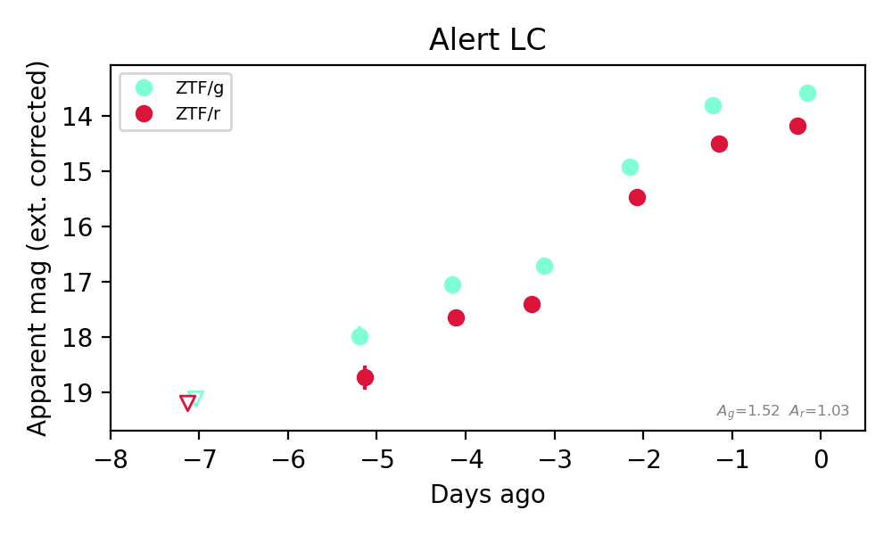
Extinction-corrected gr color:
From alerts: -0.61 +/- 0.03 mag
Rise Rate:
g: 0.81 mag/day
r: 0.87 mag/day
Fade Rate:
1. [ZTF] ZTF26abrmdnv (Afterglow?FBOT?) [Back to Top] [Share] [Trigger Swift] [Fritz Alert] [Fritz Source] [Lasair]RA, Dec: 357.1566, 50.42315 23h48m37.58s, 50d25m23.33sGalactic (l, b): 112.80744, -11.20976 ext(g-r) = 0.196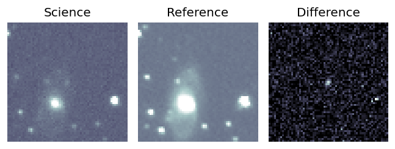
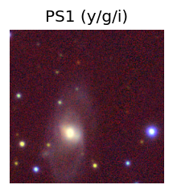

TESS: Sectors [17 24 57 84]
PS1: 1 source in 3 arcsec Closest: d = 7.58 arcsec photoz=0.09+/-0.02 peak abs mag = -19.59
LegacySurvey: 0 sources in 3 arcsec
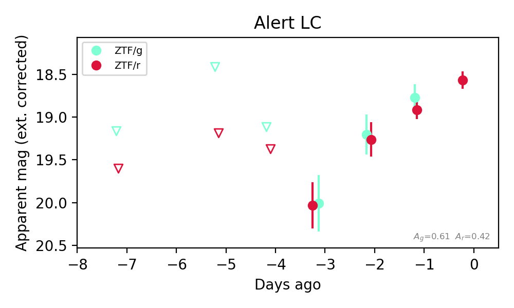
Extinction-corrected gr color:
From alerts: -0.14 +/- 0.19 mag
Consistent with synchrotron, g-r>0!
Rise Rate:
g: 0.59 mag/day
r: 0.44 mag/day
Fade Rate:
2. [ZTF] ZTF26abrpjdl (Afterglow?) [Back to Top] [Share] [Trigger Swift] [Fritz Alert] [Fritz Source] [Lasair]RA, Dec: 320.11244, 2.17822 21h20m26.99s, 2d10m41.58sGalactic (l, b): 54.20305, -31.40075 ext(g-r) = 0.064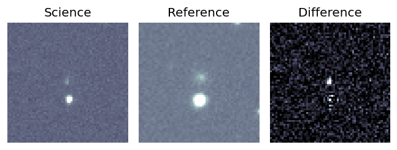
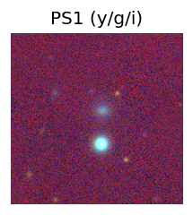
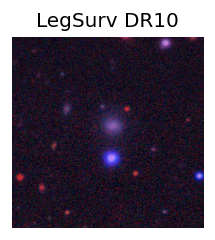
TESS: Sectors [55 82]
SDSS (<15 kpc):Found SDSS phot-z: z=0.10; peak abs mag = -19.29
PS1: 0 sources in 3 arcsec
LegacySurvey: 1 sources in 3 arcsec Closest: d = 2.83 arcsec, 322.0 deg (east of north) photoz=0.07 (68% bounds 0.05, 0.11), type=REX peak abs mag (ext. corrected) = -18.62 (68% bounds -17.59, -19.47)
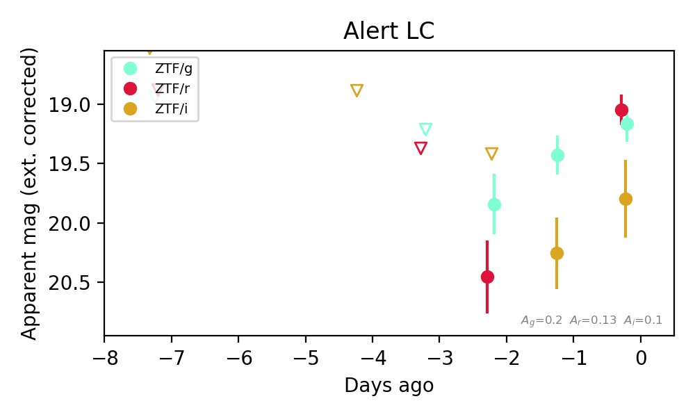
Extinction-corrected gr color:
From alerts: 0.12 +/- 0.2 mag
Extinction-corrected gi color:
From alerts: -0.63 +/- 0.36 mag
Extinction-corrected ri color:
From alerts: -0.75 +/- 0.35 mag
Consistent with synchrotron, g-r>0!
Rise Rate:
g: 0.32 mag/day
r: 0.71 mag/day
Fade Rate:
3. [ZTF] ZTF26abrshyo (Afterglow?) [Back to Top] [Share] [Trigger Swift] [Fritz Alert] [Fritz Source] [Lasair]RA, Dec: 284.64822, -9.46929 18h58m35.57s, -9d-28m-9.45sGalactic (l, b): 25.28429, -5.87853 ext(g-r) = 0.357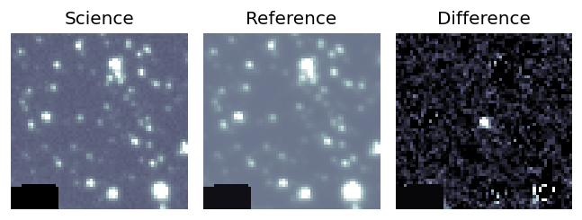
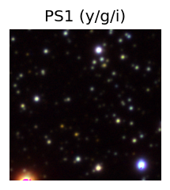

TESS: Sectors 80
PS1: 0 sources in 3 arcsec
LegacySurvey: 0 sources in 3 arcsec
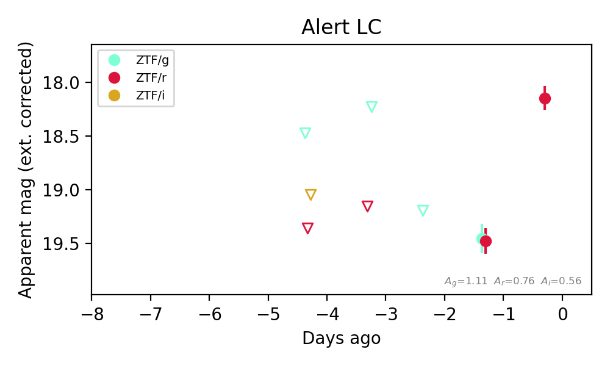
Extinction-corrected gr color:
From alerts: -0.02 +/- 0.18 mag
Consistent with synchrotron, g-r>0!
Rise Rate:
r: 1.31 mag/day
Fade Rate: